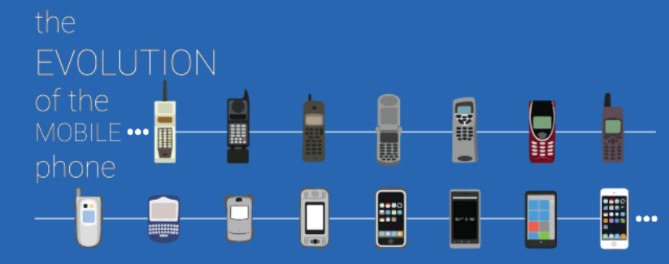

El teléfono móvil o teléfono celular es un aparato indispensable en la actualidad; sin embargo su
popularización ha sido un fenómeno muy reciente. En un principio el teléfono móvil solo podía ser usado en
vehículos por su tamaño, reduciéndose posteriormente a una unidad portátil, y finalmente al tamaño de
bolsillo que se utiliza hoy en día.
El 3 de abril de 1973,16 Martín Cooper directivo de Motorola realizó la primera llamada desde un teléfono móvil del
proyecto DynaTAC 8000X desde una calle de Nueva York.17 precisamente a su mayor rival en el sector de telefonía:
Joel Engel, de los Bell Labs de AT&T.
El DynaTAC 8000X es presentado oficialmente en 1984, año en que se empezó a comercializar. El teléfono pesaba
cerca de 1 kg, tenía un tamaño de 33 x 4,4 x 8,9 centímetros y su batería duraba una hora de comunicación o una
jornada laboral (ocho horas) en espera, con pantalla led.
Ameritech Mobile Communications fue la primera empresa en los Estados Unidos en proporcionar servicio de
telefonía móvil al público general.
En 1981 el fabricante Ericsson lanza el sistema NMT 450 (Nordic Mobile Telephony 450 MHz). Este sistema seguía
utilizando canales de radio analógicos (frecuencias en torno a 450 MHz) con modulación en frecuencia (FM). Era el
primer sistema del mundo de telefonía móvil tal como se entiende hasta hoy en día.
os equipos 1G pueden parecer algo aparatosos para los estándares actuales pero fueron un gran avance para su
época, ya que podían ser trasladados y utilizados por una única persona.
En 1986, Ericsson modernizó el sistema, llevándolo hasta el nivel NMT 900. Esta nueva versión funcionaba
prácticamente igual que la anterior pero a frecuencias superiores (del orden de 900 MHz). Esto posibilitó dar
servicio a un mayor número de usuarios y avanzar en la portabilidad de los terminales.
Además del sistema NMT, en la década de 1980 se desarrollaron otros sistemas de telefonía móvil tales como:
Advanced Mobile Phone System en Estados Unidos y TACS (Total Access Comunication System).
El sistema TACS se utilizó en España con el nombre comercial de MoviLine. Estuvo en servicio hasta su extinción en 2003.
Cuales fueron los primeros celulares?
1. Motorola Dynatac 8000X
2. Nokia 2010
3. Ericsson 788
Phones / Mobiles

Historia del Tablet
Primera generación
Los primeros ejemplos del concepto «tableta de información» se mostraron en la película 2001, odisea del
espacio (de 1968),7 y también la serie Star Trek (de los años sesenta). Probablemente basado en estas
tabletas de ficción, Alan Kay desarrolló el concepto Dynabook (en 1972), aunque la tecnología de la época no
le daba posibilidad de construir un dispositivo funcional.[cita requerida] Alan Kay diseñó un aparato similar a lo
que hoy en día es un notebook, que tendría una batería de larga duración y un software que facilitaría el
acceso digital a niños. Pero en su mayoría fue financiado con otros fines no educativos: proveer de un sistema
de información militar portátil.
Una tableta, en muchos lugares también llamada por el anglicismo tablet,12 es un dispositivo electrónico
portátil de mayor tamaño que un teléfono inteligente o un PDA, se trata de una sola pieza que integra3 una
pantalla táctil (sencilla o multitáctil) que emite luz4 y con la que se interactúa primariamente con los dedos o
un estilete (pasivo o activo), sin necesidad de teclado físico ni ratón. Estos últimos se ven reemplazados por un
teclado virtual y, en determinados modelos, por un mini trackball o "bola de seguimiento" integrada en uno de
los bordes de la pantalla.5 En su interior alberga todos los componentes oportunos para funcionar de forma
autónoma, siendo su utilidad mayor que la de un móvil pero a su vez menor a la de un ordenador portátil,
resultando ser su portabilidad sencilla y exitosa.
El término puede aplicarse a una variedad de formatos que difieren en el tamaño o la posición de la pantalla
con respecto a un teclado. El formato estándar se llama pizarra (slate), habitualmente de 7 a 213 pulgadas, y
carece de teclado integrado aunque puede conectarse a uno inalámbrico (por ejemplo, Bluetooth) o mediante,
un cable USB (muchos sistemas operativos reconocen directamente teclados y ratones USB).
Cuales fueron los primeros tablets?
1. Write-Top 1987
2. Sony PRS 350 SC
3. Samsumg galaxy tab
Tablet's
Historia de la Televisión
Primera generación
Los primeros televisores que se pueden considerar comerciales fueron de tipo mecánico y se basaban en un
disco giratorio, el disco de Nipkow (patentado por el ingeniero alemán Paul Nipkow en 1884), que contenía una
serie de agujeros dispuestos en espiral y que permitían realizar una exploración "línea por línea" a una imagen
fuertemente iluminada. La resolución de los primeros sistemas mecánicos era de 30 líneas a 12 cuadros pero
fueron posteriormente mejoradas hasta alcanzar cientos de líneas de resolución e inclusive incluir color.
La televisión mecánica fue comercializada desde 1928 hasta 1934 en el Reino Unido, Estados Unidos y la URSS.
Los primeros televisores comerciales vendidos por Baird en el Reino Unido en 1928 fueron radios que venían con
un aditamento para televisión consistente en un tubo de Neón detrás de un disco de Nipkow y producían una
imagen del tamaño de una estampilla, ampliada al doble por una lente. El "televisor" Baird estaba también
disponible sin la radio. El televisor vendido entre 1930 y 1933 es considerado el primer televisor comercial
lcanzando varios miles de unidades vendidas. El sistema mecánico fue pronto desplazado por el uso del CRT
(tubo de rayos catódicos)
Como elemento generador de imágenes, que permitía alcanzar mejores resoluciones y velocidades de exploración.
Además, al no tener elementos mecánicos, el tiempo de vida útil era mucho mayor.
El primer televisor totalmente electrónico (sin elementos mecánicos para generación de la imagen) con tubo de
rayos catódicos.
Fue manufacturado por Telefunken en Alemania en 1934, seguido de otros fabricantes en Francia (1936),
El Reino Unido (1936) y los Estados Unidos (1938).
Se estima que antes de la II Guerra Mundial se fabricaron en el Reino Unido unos 19 000 aparatos y en Alemania unos 1600.
Ya en las épocas tempranas del CRT se empezaron a idear sistemas de transmisión en color, pero no fue hasta el desarrollo
de los tubos de rayos catódicos con tres cañones, que se empezaron a fabricar masivamente televisores en color totalmente
electrónicos.
En la década de 1970, los televisores en color fueron ampliamente difundidos y empezaron a comercializarse en los países
desarrollados. La premisa de compatibilidad con los sistemas monocromáticos permitió que ambos tipos de televisores
convivieran de forma armoniosa hasta nuestros días.